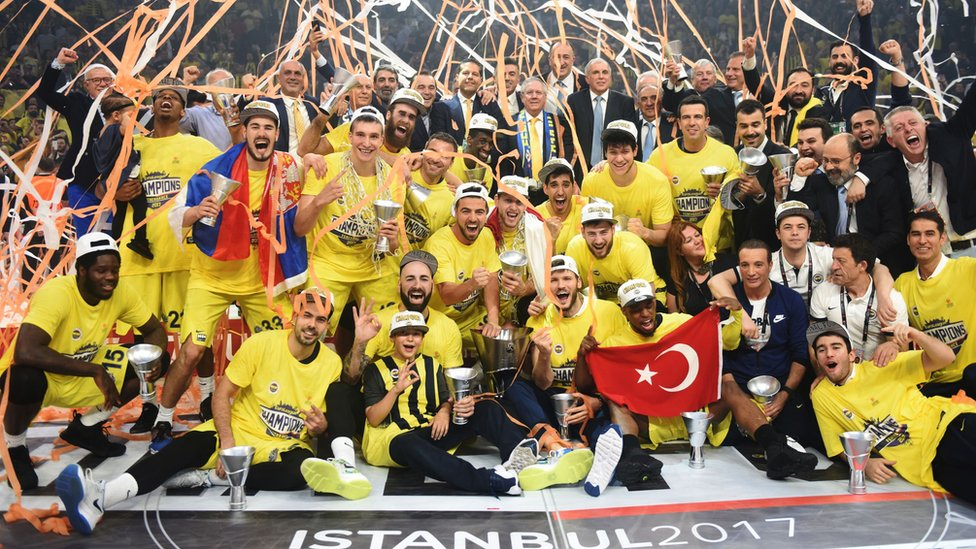

Kuruluş
Fenerbahçe Spor Kulübü'nde basketbol çalışmaları, futbol haricindeki branşların serpilmeye başladığı 1913 yılında başladı. Böylelikle bu branş, Türkiye’de bir kulüp çatısı altında kurulan ilk basketbol takımı olarak faaliyete geçti. Balkan Savaşı (1912-13) ve I. Dünya Savaşı (1914-18) nedeniyle kesintiye uğrayan bu faaliyetler 1919 yazında tekrar canlandıysa da, Kuşdili Çayırı'ndaki çimento sahadaki çalışmalar kış gelince, kapalı salon olmadığından, durmuştur. İstanbul'un 16 Mart 1920 tarihinde işgalinin ardından 1920 yazında bir İngiliz birliğinin, Fenerbahçe Külübü'nü işgal edip kapatması nedeniyle faaliyetlerin yeniden başlayabilmesi mümkün olmamıştır.
Obradović ile Altın Çağ: Avrupa'nın zirvesinde (2015-2020)
Fenerbahçe 2016-17 sezonu öncesinde Bogdan Bogdanović, Ekpe Udoh ve Jan Veselý ile yeni sözleşme imzaladı. Daha sonra ise İspanya'da düzenlenen özel turnuvada Real Madrid'i yenerek şampiyon oldu. Fenerbahçe 2016-17 sezonunda Cumhurbaşkanlığı Kupasını Anadolu Efes'i 77-69 yenerek kazandı. Türkiye Kupası çeyrek finalinde de Anadolu Efes ile karşılaştı ve bu mücadeleden mağlup ayrıldı. Euroleague'de normal sezonu 5. olarak tamamladı. Ardından Panathinaikos'u deplasman dezavantajına rağmen 0-3'le eleyerek Final Four'a emin adımlarla yükseldi. İstanbul'da, Sinan Erdem Spor Salonu'ndaki Final Four mücadelesinde Real Madrid'i eleyerek finalde Olimpiakos'un rakibi oldu. Final karşılaşmasını 80-64'lük skorla kazanan Fenerbahçe EuroLeague'de şampiyon oldu ve bunu başaran ilk ve tek Türk takımı olarak Türk Basketbol tarihine geçti.[19] Türkiye Basketbol Ligi'nde ise sadece 2 yenilgi aldı ve sezonu lider tamamladı. Çeyrek finalde Tofaş ve yarı finalde Darüşşafaka'ya da yenilmeyen Fenerbahçe, ligi ikinci bitiren Beşiktaş ile finalde karşılaştı ve rakibini 4-0'la geçerek şampiyon oldu. Böylelikle TBL'de oynadığı 39 maçta 37 galibiyet aldı, son 30 galibiyeti ise üst üste idi. Fenerbahçe 2016-17 sezonunu Cumhurbaşkanlığı Kupası, Euroleague ve Türkiye Basketbol Ligi şampiyonluğu ile kapatarak tarihindeki en başarılı sezonunu yaşadı.
Fenerbahçe kadrosu
| ||||||||||||||||||||||||||||||||||||||||||||||||||||||||||||||||||||||||||||||||||||||||||||||||||||||||||||||||||||||||||||||
|---|---|---|---|---|---|---|---|---|---|---|---|---|---|---|---|---|---|---|---|---|---|---|---|---|---|---|---|---|---|---|---|---|---|---|---|---|---|---|---|---|---|---|---|---|---|---|---|---|---|---|---|---|---|---|---|---|---|---|---|---|---|---|---|---|---|---|---|---|---|---|---|---|---|---|---|---|---|---|---|---|---|---|---|---|---|---|---|---|---|---|---|---|---|---|---|---|---|---|---|---|---|---|---|---|---|---|---|---|---|---|---|---|---|---|---|---|---|---|---|---|---|---|---|---|---|---|
| Oyuncular | ||||||||||||||||||||||||||||||||||||||||||||||||||||||||||||||||||||||||||||||||||||||||||||||||||||||||||||||||||||||||||||||
| ||||||||||||||||||||||||||||||||||||||||||||||||||||||||||||||||||||||||||||||||||||||||||||||||||||||||||||||||||||||||||||||